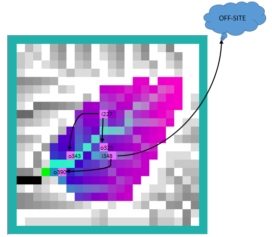
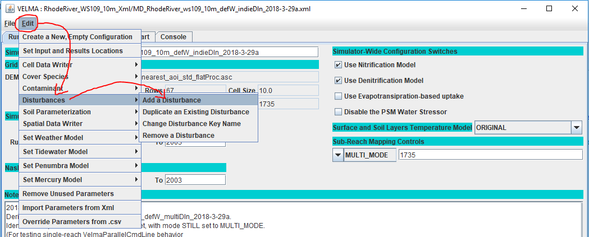
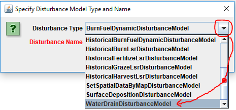
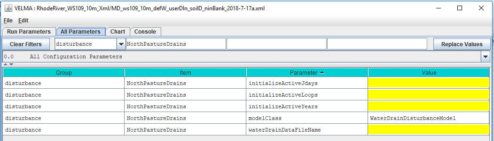

+
Warning! This material is not final
The documentation on this page is for an unreleased VELMA version and is subject to change.
Take caution when using the following information for the current VELMA version (2.2).
Water Drain Disturbance Model Overview
The Water Drain Disturbance Model provides a mechanism to perform arbitrary redistribution of water amounts within a watershed, and/or removal of water amounts from the watershed during the steps of a simulation run.
Users specify one or more drain inlet cell locations for a given Water Drain Disturbance, along with parameters that determine when and under what conditions those drain inlet cells are drained. Users also specify whether the water drained from inlet cells is transferred to outlet cells in the same watershed, or is removed from the watershed.
Water Drain Disturbance Model Usage Restrictions
When configuring a simulation with Water Drain Disturbances, keep the following restrictions and limitations in mind.
-
VELMA simulation configurations containing Water Drain Disturbances cannot be used with VELMA's Parallel, Multiscale, or Multimap modes.
-
VELMA simulation configurations containing Water Drain Disturbances with drain "pipes" that specify an inlet-outlet pair in separate sub-reaches, may not report accurate sub-reach runoff values. If you need accurate sub-reach runoff information you must ensure that any given inlet "pipe" and its associated outlets are all located within a single reach.
-
The Water Drain Disturbance Model currently does not interact with the VELMA Sediment Model. If your VELMA simulation configuration employs both, sediment transport amounts will be ignored by -- and not transported through -- the Water Drain Disturbance's configured "pipes". However, sediment lateral transport amounts will be affected by the change in water amounts at inlet cells.
We currently recommend not employing the Water Distrubance Model and the VELMA Sediment Model within the same VELMA simulation configuration.
Configuring a Water Drain Disturbance
Each Water Drain Disturbance parameterization added to a VELMA simulation configuration requires the following two steps:
-
Creating a drain configuration .csv data file that specifies each inlet cell and associated outlet cells that the Water Drain Disturbance will act upon.
-
Adding a WaterDrainDisturbanceModel parameterization group to the simulation configuration, and setting it to reference the drain configuration file created in step 1.
Creating a Drain Configuration Data File
A drain configuration data ("drain config") file consists of rows "drain records". Each drain record is a sequence of comma-separated fields. You can think of a drain record as a single "pipe". The drain record's fields specify an inlet, one or more outlets, and how much water can enter and travel through the "pipe".
Each field is separated from its successor by a comma "," character.
With one exception, each field specifies a single parameter value for the drain record.
The exception is the inFraction:capThreshold field, which can represent either one parameter value (inFraction), or two parameter values (inFraction and capThreshold) separated by a colon ":" character.
Caution
The Water Drain Disturbance Model's drain config parser is not tolerant of regional differences regarding separator characters. If your drain config file is generated with regional settings that use the comma (",") character as a decimal separator, the resulting .csv file will not load correctly in VELMA. Be sure your decimal separator character is written as the full stop (".") character.
Drain Record Field Descriptions
In order, from left to right across a row, the fields are:
iInlet, inFraction[:capThreshold], #ofOutlets, iOutlet1, outFraction1[, iOutlet, outFraction] iInlet
The linear index of the cell location of this drain record's inlet.
- The
iInletvalue must be an integer value (e.g. "927", not "927.0" or "927."). - Only cells within a simulation's delineated watershed are valid inlets.
inFraction[:capThreshold]
The inlet fraction and (optional) capacity threshold of this drain record.
- This field is special: it may contain either either a single value or a pair of values.
- When it specifies a single value that value is always taken to be the inlet fraction.
- When it specifies a pair of values, the values must be separated by a colon ":" character.
- Both inlet fraction and capacity threshold (if present) must be floating-point numbers in the range [0.0, 1.0].
- The inlet fraction represents the amount of the water at the inlet cell that can actually enter the inlet (zero="none", 1="all") per simulation step.
- The capacity threshold is the maximum amount of water (in mm) that this drain record can transfer to its outlet(s) per simulation step.
- When the capacity threshold is left unspecified, the drain record is assumed capable of transferring an unlimited amount of water.
#ofOutlets
The number of outlets that receive water from this drain record's inlet.
- The number of outlets must be an integer value (e.g. "2" not "2.0" or "2.").
- The value of the
#ofOutletsfield must match the number of outlets -- not the number fields -- that follow it.
After the #ofOutlets field ... Multiple outlets can be specified following the #ofOutlets field, however the fields must be specified in pairs (iOutlet, outFraction) -- i.e. there must be an even number of fields after the #ofOutlets field.
iOutlet
The linear index of a cell location that is an outlet for this drain record's inlet.
- An
iOutletfield's value may be left blank, indicating that water transferred to that particular outlet is removed from the simulation watershed (i.e. "transferred off-site").
When aniOutletfield value is not blank, it must be an integer value (e.g. "530", not "530.0" or "530."). - Only cells within a simulation's delineated watershed are valid outlets.
- Outlet cells should not be specified at the same location as their inlet.
outFraction
The fraction of the water transferred from the inlet that this outlet receives.
- The outlet fraction must be a floating-point number in the range [0.0, 1.0].
- The sum of all the outlet fractions specified for an inlet must sum to 1.0.
Example
The drain config data below configures a network of 2 inlets:
iInlet, inFraction[:capThreshold], #ofOutlets, iOutlet1, outFraction1, iOutlet2, outFraction2
227, 0.90:1200.0, 2, 343, 0.50, 323, 0.50
348, 0.75, 2, , 0.75, 390, 0.25- Each inlet drains water to 2 separate outlets.
Inlet 227 specifies outlets at cell locations 343 and 323.
Inlet 348 specifies an outlet at cell location 390, but leaves the first outlet blank: this indicates "OFF-SITE", which means the fraction of water for that (offsite) outlet is removed from the simulation watershed when drainage occurs. - Inlet 227 specifies a capacity threshold of 1200.0 (mm) of water.
Inlet 348 omits the capacity threshold, which means it can transport an "unlimited" amount of water (but after initial reduction by the specified inFraction).
The example given above includes a header row, but a header row is not required. The drain config .csv data file could consist of only the 2 data rows and still be valid.
The example configuration above result in the network of drain "pipes" illustrated below:

Adding a WaterDrainDisturbanceModel Parameterization to a VELMA Configuration
Start with an appropriate VELMA simulation configuration .xml file.
Load the file into JVelma and click the "Edit" -> "Disturbances" -> "Add a Disturbance" menu item:

In the "Specify Disturbance Model Type and Name" pop-up dialog that opens, click the drop-down selector, scroll down, and click-select the "WaterDrainDisturbanceModel" type:

After selecting WaterDrainDisturbanceModel as the type, enter a unique name for the disturbance in ihe “Disturbance Name' field of the dialog. Finally, click the OK button, which adds a new parameterization group to the simulation configuration and changes JVelma's display to the “All Parameters” tab, with the item-level filter set to only display the parameters for the newly-added Water Drain Disturbance:

Nearly all of the (many) parameters required to configure a Water Drain Disturbance are for its drain "pipes", and reside in the drain configuration file. That file is one of the few things that you must specify in the Water Drain Disturbance's parameterization group.
The goup's parameters initially have these default values:
| Group | Item | Parameter | Value |
|---|---|---|---|
| disturbance | My_Drains | initializeActiveJdays | |
| disturbance | My_Drains | initializeActiveLoops | |
| disturbance | My_Drains | initializeActiveYears | |
| disturbance | My_Drains | modelClass | WaterDrainDisturbanceModel |
| disturbance | My_Drains | waterDrainDataFileName |
- No parameters values may be left blank (even though most of the parameters default as blank).
- The value in the
Itemcolumn above is only an example. In actual use, theItemvalue will be whatever name you entered as the "Disturbance Name" for this parameter group.
Parameters That Can Be Left As-Is
The modelClass parameter is automatically set to a correct value by JVelma when you add the WaterDrainDisturbanceModel to the simualtion configuration. Do Not Change this parameter's value. Ever.
Parameterizing When Drainage Occurs
Specify values for the initializeActiveLoops, initializeActiveYears, and initializeActiveJdays parameters to determine the loops, years, and Julian days of the simulation when drainage will occur. These parameters accept single values, a comma-separated set of values, a hyphen-separated value range, or a combination of values and ranges.
For example, to schedule drainage during the 3rd loop of a simulation, in years 2000 and 2002, for the first month of each active year, along with jdays 91 and 182 of each active year:
initializeActiveLoops = 3
initializeActiveYears = 2000, 2002
initializeActiveJdays = 1-31, 91, 182All of the water drain "pipes" specified for a Water Drain Disturbance are active on the schedule specified by the three initializeActiveLoops, initializeActiveYears, and initializeActiveJdays parameters.
If you need some pipes to be active on one schedule, and others on another, you must configure your simulation to include two (or more) completely separate Water Drain Disturbances (i.e. parameterization groups), each referencing a separate drain configuration file.
Parameterizing Where and How Much Drainage Occurs
All the parameters required for drainage inlet, outlet, and quantity are contained within the drain configuration file. Set the waterDrainDataFileName parameter to point to that file.
You may specify the file by a fully-qualified path and name, a partial path and name, or just the name of the file. When the waterDrainDataFileName parameter's value isn't fully-qualified, JVelma assumes the file's location is relative to the input location specified for the simulation run by the inputDataLocationRootName and inputDataLocationFileName (startups group) parameters.
Water Drain Disturbance Results and Output
The activity and effects of Water Drain Disturbances are reflected in the DailyResults and Cell_* .csv file's column values, most strongly in the columns that record surface water amounts and lateral water movement, however, no drain-specific data columns are added to these .csv files.
Water Drain Disturbances do emit log messages with drain-specific details, but only when the following simulation configuration parameter is set true:
| Group | Item | Parameter | Value |
|---|---|---|---|
| startups | VelmaStartups.properties | collectCalibrationData | true |
When collectCalibrationData is set true, Water Drain Disturbances emit three types of csv records to both the Global State .txt and Trace .csv log files.
The Global State and Trace files can contain messages and records from many different VELMA simulator sources, but the three drain record types may be identified by the value in the third (index position 2) field: that field's value will be Water_Transfer, Chem_Transfer, or OVER_CAPACITY.
Because Global State and Trace files contain a hetrogenous collection of records, no header records for the drain record types are emitted, but header records for each of the three record types are described here:
Water_Transfer
- Occurrence: 1 record per inlet per simulation step, regardless of transferred amounts (i.e. records are emitted even when no water is transferred).
- Number of fields depends upon number of outlets specified for the inlet.
- Any off-watershed outlet returns the text “OFF_SIM” instead of a numeric integer location index for its iOutlet field value.
- Columns ending in "T1" contain values for data prior to the drain's effects, and columns ending in "T2" contain values for the same data after the drain's effects.
Log_Level,Method_Name,Water_Transfer,Loop,Step,Year,Jday,iInlet,inletWaterAmountT1,inletWaterAmountT2,[iOutlet,iOutletTransferredAmount, ...]Chem_Transfer
- Occurrence: 1 record per inlet-outlet pair (i.e. multiple records per inlet are possible) in a simulation step but only for NON-ZERO chemical transfer amounts.
- Number of fields is constant.
- An off-watershed outlet returns the value -1 instead of a valid outlet location within the delineated watershed.
- Columns ending in "T1" contain values for data prior to the drain's effects, and columns ending in "T2" contain values for the same data after the drain's effects.
Log_Level,Method_Name,Chem_Transfer,Loop,Step,Year,Jday,iInlet,iOutlet,surfacePoolKeyText,inletChemAmountT1,totalChemTransferAmount,actualChemReduction,inletChemAmountT2,outletChemAmountT2"OVER_CAPACITY
- Occurrence: 1 record per inlet per simulation step, if the inlet's initial transfer amount is over the specified capacityThreshold.
- Number of fields is constant.
- Columns ending in "T1" contain values for data prior to the drain's effects, and columns ending in "T2" contain values for the same data after the drain's effects.
Log_Level,Method_Name,OVER_CAPACITY,Loop,Step,Year,Jday,iInlet,inletLateralWaterT1,inletFraction,capacityThreshold,overCapacity,waterRemoved,inletLateralWaterT2As previously mentioned, the above drain log records are emitted only when collectCalibrationData is set true. For simulation configurations with even a modest number of configured drain "pipes", drain log records can significantly increase both the size of the Global State and Trace log files, and the time it takes to run the simulation. Setting collectCalibrationData to false provides a way to use Water Drain Disturbance without incurring simulation results size and running time costs.
However, be aware that collectCalibrationData toggles other data besides water drain records on or off as well. For example, the Calibration_DailyResults.csv file (different and distinct from DailyResults.csv) is not written when collectCalibrationData is set to false. Be certain you do not need any of the data controlled by collectCalibrationData before setting it to false.